全文翻译
摘要
具有Transformer架构的扩散模型在生成高保真图像和实现高分辨率可扩展性方面展现出了良好的能力。然而，图像合成所需的迭代采样过程非常耗费资源。有一系列研究致力于将概率流常微分方程（ODE）的求解方案蒸馏到少步学生模型中。尽管如此，现有方法受限于依赖最新的去噪样本作为输入，这使得它们容易受到暴露偏差的影响。为了解决这一局限性，我们提出了自回归蒸馏（ARD）方法，这是一种利用ODE历史轨迹来预测未来步骤的新方法。ARD具有两个关键优势：1. 它通过利用对累积误差不太敏感的预测历史轨迹来减轻暴露偏差；2. 它将ODE轨迹的先前历史作为更有效的粗粒度信息源加以利用。ARD通过添加标记轨迹历史中每个输入的逐令牌时间嵌入来修改教师Transformer架构，并采用分块因果注意力掩码进行训练。此外，仅在较低的Transformer层中融入历史输入可提升性能和效率。我们在ImageNet的类条件生成和文本到图像（T2I）合成任务中验证了ARD的有效性。在ImageNet-256上，我们的模型与基线方法相比，FID（Fréchet Inception Distance）退化降低了5倍，而仅需增加1.1%的FLOPs（浮点运算次数）。此外，ARD在仅4步内就使ImageNet-256的FID达到1.84，并且在提示遵循度评分上优于公开的1024像素文本到图像蒸馏模型，同时与教师模型相比FID仅有微小下降。项目页面：https://github.com/alsdudrla10/ARD。
1. 引言
扩散模型目前在图像合成领域占据主导地位，因其出色的泛化能力和前所未有的视觉质量[8, 12, 56, 61]。与生成对抗网络（GAN）[16]不同，扩散模型的稳定训练使其能够扩展到高分辨率图像生成任务。最近，基于扩散Transformer（DiT）[54]架构的模型因其优异的缩放特性和生成高分辨率图像的能力而广受欢迎[5, 6]。然而，从扩散模型中采样需要重复进行神经网络评估[44]，这使得高分辨率图像合成过程缓慢且资源密集。
扩散模型通过数值求解去噪过程来生成样本。去噪过程可用概率流常微分方程（ODE）描述[69, 71]，该方程在噪声和样本之间建立了确定性联系。为降低采样成本，一系列蒸馏模型[17, 27, 42, 45, 62, 72, 86]被提出，旨在学习用更少的步骤预测ODE的解。然而，少步学生模型会遭受暴露偏差[53, 57]的影响，因为学生模型的中间预测常因估计误差偏离教师模型的ODE轨迹。这些误差在迭代采样过程中不断累积，导致预测在接近解时变得更加不准确。
为解决少步蒸馏模型中的暴露偏差问题，我们提出了一种适用于扩散Transformer的自回归蒸馏（ARD）方法。ARD基于当前估计值$X_{T_{x}}$和整个历史轨迹来预测下一个样本$X_{\tau_{s-1}}$，这种方式包含了更丰富的信息。该方法具有两个优势：减少累积误差，并从历史轨迹中获取更优质的粗粒度信息源。在底层网络层中融入历史轨迹，进一步引入了处理粗粒度信息的归纳偏置。我们发现，在ImageNet 256p数据集上，基于完整历史轨迹进行蒸馏时，与基线方法相比，模型的FID（弗雷歇初始距离）退化降低了五倍，而计算量仅增加1.1%。此外，我们的方法具有良好的扩展性，可用于蒸馏1024p的文本到图像扩散Transformer，其在文本-图像对齐指标上优于公开的蒸馏方法。
2. 预备知识
2.1 扩散模型
扩散模型通过随机微分方程（SDE）定义前向过程和相应的反向过程。公式（1）中的前向过程将数据$x_{0} \sim p_{\text {data }}\left(x_{0}\right)$映射为噪声$x_{T}$：
其中$f: \mathbb{R}^{d} \times[0, T] \rightarrow \mathbb{R}$是漂移项，$g:[0, T] \rightarrow \mathbb{R}$是扩散项，$w_{t}$是维纳过程。前向过程通常设置为方差保持[22]或方差爆炸[71]的SDE，以使$t=T$时的分布接近高斯分布。扩散模型通过反向过程从噪声$x_{T} \sim p_{\text {prior }}\left(x_{T}\right)$生成数据[1, 71]。反向过程存在一个概率流ODE（PF-ODE），它是反向SDE的确定性对应形式：
这里$p_{t}\left(x_{t}\right)$是由公式（1）中的前向过程定义的边缘分布。PF-ODE与反向SDE具有相同的边缘分布，同时在噪声$x_{T}$和样本$x_{0}$之间提供了确定性的联系。由于得分函数$\nabla_{x_{t}} \log p_{t}\left(x_{t}\right)$难以直接求解，因此通过神经网络$\nabla_{x_{t}} \log p_{t}^{\phi}\left(x_{t}\right)$并利用得分匹配目标[70, 79]进行估计。
2.2 步长蒸馏模型
公式（2）中ODE的解由$x_{T}+\int_{T}^{0} \frac{d x_{t}}{d t} d t$得到；然而，这需要足够多的步骤来减少离散化误差[9, 44]。为了计算每一步的$\frac{d x_{t}}{d t}$，我们需要评估学习到的神经得分函数$\nabla_{x_{t}} \log p_{t}^{\phi^{\ast}}\left(x_{t}\right)$，这会导致高昂的计算成本。为了提高推理效率，步长蒸馏[51, 62]定义了中间时间$\tau_{s}:=T \times \frac{s}{S}$（其中$S$是学生模型的总步数，$s \in\{0,1, \ldots, S\}$）。这些中间时间在教师ODE中定义了一个轨迹$\mu_{\phi^{\ast}}:=\left[x_{\tau_{S}}, x_{\tau_{S-1}}, \ldots, x_{\tau_{1}}, x_{\tau_{0}}\right]$，从初始噪声$x_{\tau_{S}}=x_{T}$开始，以干净样本$x_{\tau_{0}}=x_{0}$结束。学生模型学习一个联合概率$p\left(\mu_{\phi^{\ast}}\right)$，定义为：
由于PF-ODE的确定性，每个条件概率$p\left(x_{\tau_{s-1}} \mid x_{\tau_{s}}\right)$是狄拉克δ分布，因此可以用确定性映射函数建模：$x_{\tau_{s-1}}=G\left(x_{\tau_{s}}, s\right):=x_{\tau_{s}}+\int_{\tau_{s}}^{\tau_{s-1}} \frac{d x_{t}}{d t} d t$。学生模型$G_{\theta}\left(x_{\tau_{s}}, s\right) \approx G\left(x_{\tau_{s}}, s\right)$学习模仿真实的ODE积分过程。渐进蒸馏[51, 62]提出了一种用于步长蒸馏的渐进算法，但该算法存在一个显著缺点：当学生模型再次成为教师模型时，其迭代训练阶段会累积误差。使用$L_{\text {step }}$直接从教师模型训练少步学生模型，可以减轻迭代渐进蒸馏过程带来的累积误差。我们的方法建立在步长蒸馏的基础上，直接从教师模型学习：
暴露偏差在推理过程中，生成从$x_{\tau_{S}} \sim p_{\text {prior }}\left(x_{\tau_{S}}\right)$开始。每一步，学生模型仅基于当前样本$\hat{x}_{\tau_{s}}$预测$\hat{x}_{\tau_{s-1}}=G_{\theta}\left(\hat{x}_{\tau_{s}}, s\right)$。如果$\hat{x}_{\tau_{s}}$偏离教师ODE，学生模型$G_{\theta}$将基于训练中未见过的样本进行推断。例如，图2a中展示的中间样本，一条鱼没有眼睛，而这类样本在训练数据中并未出现。这种未预见的输入会在采样过程中传播，最终导致最终样本$x_{\tau_{0}}$也缺少眼睛。除非实现完美优化，否则这种暴露偏差是迭代过程的固有局限[53, 57]。随着迭代采样过程的进行，误差会不断累积。
| 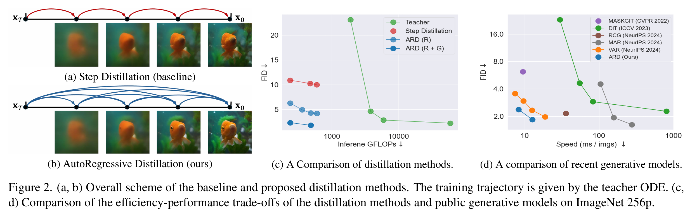 |
|---|
| 图2.（a、b）基线蒸馏方法和所提出蒸馏方法的整体方案。训练轨迹由教师ODE给出。（c、d）蒸馏方法与公开生成模型在ImageNet 256p上的效率-性能权衡比较。 |
2.3 自回归模型
自回归模型[32]通过将多元随机变量$x:=\left[x_{S}, x_{S-1}, \ldots, x_{0}\right]$的联合概率分布分解为条件概率的乘积来表示：$p(x)=p\left(x_{S}\right) \times \prod_{s=1}^{S} p\left(x_{s-1} \mid x_{S: s}\right)$，其中$x_{S: s}=\left[x_{S}, x_{S-1}, \ldots, x_{s}\right]$。如上文所述，这种公式不依赖于任何特定假设。分解中的每个分量$p\left(x_{s-1} \mid x_{S: s}\right)$都包含了所有先前变量的信息。
3. 方法
在本节中，我们将介绍扩散Transformer（DiT）的自回归蒸馏（ARD）方法。图2b概述了ARD的流程。我们将在3.1节中剖析蒸馏的概率公式，接着在3.2节探讨学生模型的Transformer架构设计，最后在3.3节阐述训练和推理过程。
3.1 自回归蒸馏
本节将公式（3）中的步长蒸馏公式推广至ARD。在理想蒸馏情况下，若没有完整历史轨迹信息，公式（3）的分解依然成立。然而，当每个概率$p(x_{\tau_{s-1}}|x_{\tau_s})$由$\hat{x}_{\tau_{s-1}}=G_{\theta}(x_{\tau_s},s)$近似时，由于估计误差，与真实值的偏差不可避免，从而导致2.2节中讨论的暴露偏差问题。
为缓解这一问题，我们受2.3节启发，以自回归方式扩展公式（3）的表达：
其中$x_{\tau_S:\tau_s}=[x_{\tau_S},x_{\tau_{S-1}},\dots,x_{\tau_s}]$表示历史轨迹。该公式有两个优势：（i）每一步都将真实初始噪声$x_{\tau_S}$作为输入，其与预测目标$x_{\tau_{s-1}}$存在确定性关联。此外，从$\hat{x}_{\tau_{S-1}}$到$\hat{x}_{\tau_{s+1}}$的历史轨迹预测，相比近期样本$\hat{x}_{\tau_s}$更为准确，因为在推理过程中其误差累积更少。相比之下，公式（3）的输入仅为当前样本$\hat{x}_{\tau_s}$，易受暴露偏差影响。（ii）为预测每一步的$x_{\tau_{s-1}}$，模型需同时生成粗粒度和细粒度信息。近期去噪样本$x_{\tau_s}$是细粒度信息的最佳来源，而靠近$x_{\tau_S}$的历史轨迹则是粗粒度信息的更好来源[13,60]。
对于修改后的学生模型公式，我们旨在估计$p(x_{\tau_{s-1}}|x_{\tau_S:\tau_s})$，其仍为狄拉克δ分布。为实现这一点，我们定义新的映射函数$x_{\tau_{s-1}}=G(x_{\tau_S:\tau_s},s):=x_{\tau_s}+\int_{\tau_s}^{\tau_{s-1}}\frac{dx_t}{dt}dt$，然后用学生神经网络$G_{\theta}(x_{\tau_S:\tau_s},s)$对该函数进行近似。
3.2 Transformer设计
3.1节中定义的映射函数$G_{\theta}(x_{\tau_S:\tau_s},s)$的设计并非易事，因为输入大小会随去噪步骤$s$而变化。为解决这一问题，我们对教师DiT主干进行修改，以适应多输入场景。
架构 为处理历史轨迹，我们设计了如图3a所示的基于Transformer的自回归模型。每个输入$x_{\tau_s}$通过共享的补丁嵌入器被标记为一系列标记。由于每个输入$x_{\tau_s}$与二维网格具有相同的空间结构，位置嵌入在输入间共享。Transformer块需要识别输入序列$x_{\tau_S},\dots,x_{\tau_s}$中每个标记的顺序。为此，我们向每个标记添加额外的时间步嵌入，类似于VAR中的层级嵌入[76]。近期去噪样本$x_{\tau_s}$成为查询标记，历史序列$x_{\tau_S:\tau_s}$则成为自注意力块中的键值标记。经过L个堆叠的Transformer块后，标记经线性变换和去标记化处理，得到样本$x_{\tau_{s-1}}$。
| 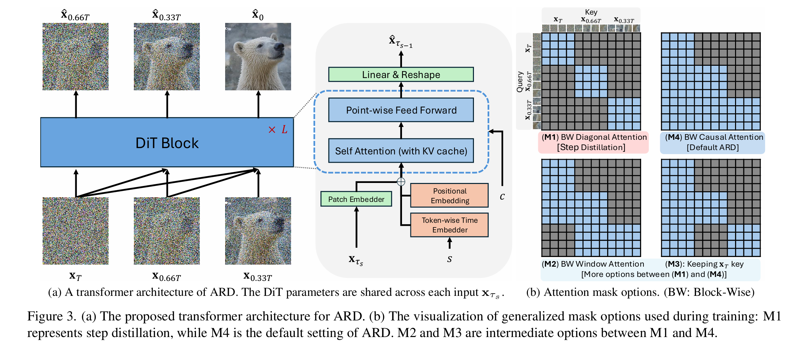 |
|---|
| 图3.（a）所提出的ARDTransformer架构。DiT参数在每个输入xτs之间共享。（b）训练期间使用的通用掩码选项可视化：M1代表分步蒸馏，而M4是ARD的默认设置。M2和M3是M1和M4之间的中间选项。 |
仅在底层N层使用历史轨迹 图4b、4d和4f展示了在每个L层Transformer块中，第2、3、4步时各输入的注意力分数。近期去噪样本$x_{\tau_s}$在高层中作为键标记的激活程度最高，而历史轨迹$x_{\tau_S:\tau_{s+1}}$在底层中被激活。已知DiT块的底层用于处理粗粒度信息，高层用于处理细粒度信息[19]。这一注意力分配验证了历史轨迹的有效性，其作为粗粒度信息的更好来源。然而，在图4b、4d和4f中，历史标记在高层仍有轻微波动，可能是优化不完美所致。我们在Transformer层中提出如图4a所示的额外设计选择：仅在底层N层使用历史轨迹。这种归纳偏置增强了底层对历史轨迹的利用，如图4c、4e和4g所示。
| 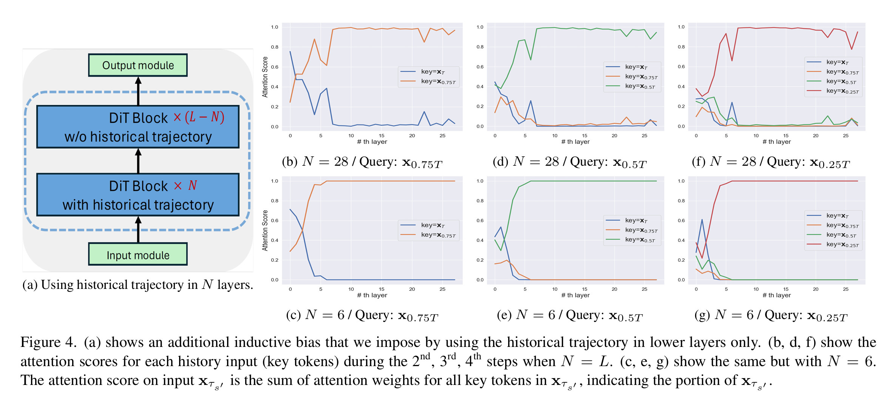 |
|---|
| 图4.（a）展示了我们通过仅在较低层使用历史轨迹而施加的额外归纳偏置。（b、d、f）展示了当N=L时，在第2、3、4步中每个历史输入（关键令牌）的注意力分数。（c、e、g）展示了N=6时的相同情况。输入xτs’上的注意力分数是xτs’中所有关键令牌的注意力权重之和，表示Xτs’的占比。 |
3.3 训练与推理流程
ARD的默认训练目标是公式（6）中的回归损失$\mathcal{L}*{ARD}$，并针对θ进行优化。图3a中的Transformer架构允许通过使用注意力掩码，同时计算所有$s\in\{1,\dots,S\}$的$\hat{x}_{\tau_{s-1}}=G_{\theta}(x_{\tau_S:\tau_s},s)$。我们可通过设计如图3b所示的注意力掩码来扩展框架。选项M4中的块级因果注意力最为灵活，它利用了整个轨迹历史。选项M1代表步长蒸馏，仅使用当前样本$x_{\tau_s}$作为输入。选项M2和M3是M1和M4之间的中间选择。M2中的窗口注意力仅使用轨迹历史中的当前样本和前一个样本。M3中的注意力掩码使用最近的去噪样本和初始噪声$x_{\tau_S}$，这有助于持续保留真实信号。我们的框架还可从最终预测$\hat{x}_{\tau_0}=G_{\theta}(x_{\tau_S:\tau_1},1)$的额外判别器损失中获益，类似于[27]。通过在该损失中使用真实数据，我们可进一步改善学生生成图像的高频细节，甚至超越教师模型。
在推理过程中，生成从$x_{\tau_S}\sim p_{\text{prior}}(x_{\tau_S})$开始。每一步，学生模型基于整个历史预测$\hat{x}_{\tau_S:\tau_s}=[x_{\tau_S},\hat{x}_{\tau_{S-1}},\dots,\hat{x}_{\tau_s}]$预测$\hat{x}_{\tau_{s-1}}=G_{\theta}(\hat{x}_{\tau_S:\tau_s},s)$。$[x_{\tau_S},\hat{x}_{\tau_{S-1}},\dots,\hat{x}_{\tau_{s+1}}]$的信息作为kv缓存存储在先前步骤中，以加速推理。推理过程中无需注意力掩码。
4. 实验
本节从实证角度验证ARD的有效性。4.1节阐述ImageNet上类别条件图像合成的结果[10]，4.2节呈现文本条件图像合成的实验结果。
4.1 类别条件图像生成
我们采用DiT/XL-2潜在扩散Transformer架构[54]，并将其作为教师架构。该教师模型（$(\phi)$）在ImageNet 256p上进行训练。通过让教师模型以25步和1.5的无分类器引导尺度[21]运行，构建ODE轨迹$\mu_{\phi}$。总共预计算并存储256万条ODE轨迹用于蒸馏。
评估指标 为评估样本保真度和多样性，我们遵循ADM[12]的协议，使用预训练的Inception-V3网络[75]测量FID[20]、IS[63]、精确率（Precision）和召回率（Recall）[31]。FID和IS同时量化样本质量和多样性；精确率衡量样本保真度，召回率通过量化特征空间中真实样本与生成样本的流形重叠区域来衡量样本多样性。
ARD带来的性能提升 所提出的ARD是对先前方法[45,62]的泛化：当步数S为1时，ARD变为知识蒸馏（KD）[45]；当ARD使用图3b中的注意力掩码选项M1时，其变为步长蒸馏[62]。表1和图2c展示了ARD扩展设计带来的性能提升。对于我们的方法，将步数从2增加到4可使FID性能提升（6.29→4.32）。然而，即使步长蒸馏的步数S从2增加到4，其FID提升也微乎其微（10.92→10.25），且召回率显著下降。在图5a和5c中可以看到，步长蒸馏无法保留全局结构（如青蛙的朝向），这表明由于暴露偏差的增加，教师解的多样性未被维持（见2.2节）。
| 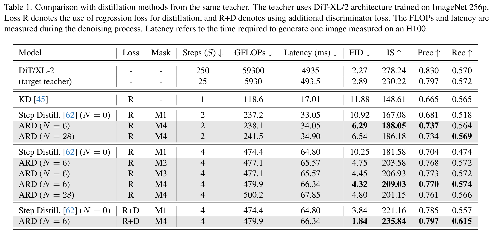 |
|---|
| 表1：与来自同一教师的蒸馏方法的比较。教师使用在ImageNet 256p上训练的DiT-XL/2架构。损失R表示使用回归损失进行蒸馏，R+D表示使用额外的判别器损失。FLOPs和延迟在去噪过程中测量。延迟是指在H100上生成一张图像所需的时间。 |
使用块级因果掩码M4的ARD（利用整个轨迹历史）在2步和4步的所有指标上均优于步长蒸馏。与步长蒸馏不同，当步数从2增加到4时，ARD的召回率保持稳定。图5b和5c显示，ARD保留了教师解的全局结构。因此，随着步数S的增加，ARD的性能显著提升。图6a表明，在训练过程中，ARD变体（公式（6））比原始回归损失（公式（4））收敛更有效，证明了我们自回归设计的优势。此外，对于4步ARD模型，其相对于教师的FID退化值为1.43（4.32-2.89），比步长蒸馏的7.36（10.25-2.89）低5倍。
| 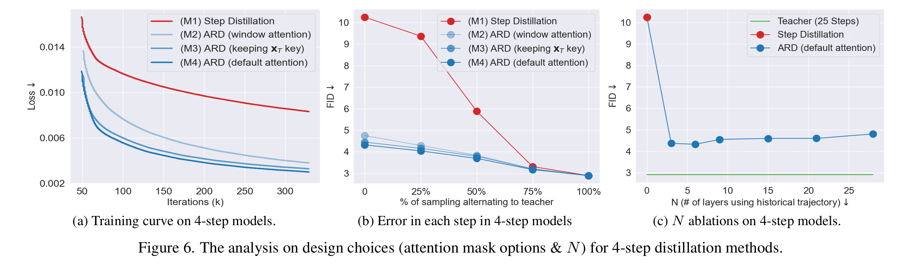 |
|---|
| 图6. 4步蒸馏方法的设计选择（注意力掩码选项和N）分析。 |
当使用额外的判别器损失（R+D）时，步长蒸馏和ARD的性能均有所提升，且ARD优于步长蒸馏，达到1.84的FID。图5d显示，判别器损失使样本更清晰，同时通过教师提供的$[x_{\tau_S},x_{\tau_0}]$耦合保留了全局结构。这表明额外的判别器损失不会损害样本的多样性，甚至能改善召回率指标。判别器损失使ARD的表现优于教师模型，并在速度和质量方面超越表2和图2d中的公开少步生成模型。图2d中的速度是在NVIDIA H100上以批量大小128测量的。对于基线模型，我们使用其官方代码并在相同条件下测量速度。
| 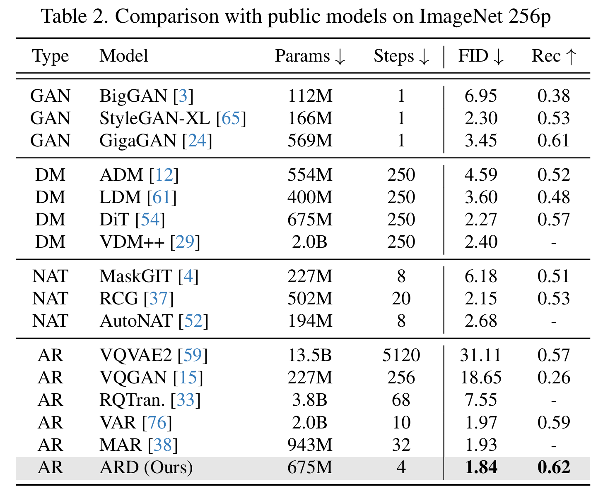 |
|---|
| 表2：与ImageNet 256p上的公开模型的比较。 |
| 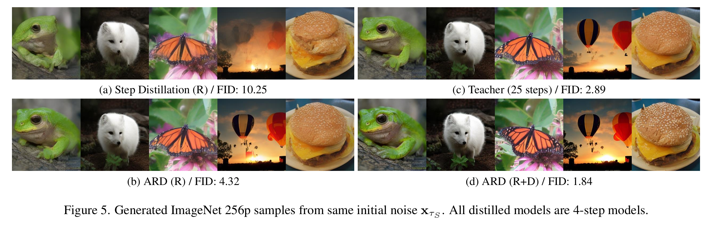 |
|---|
| 图5. 从相同的初始噪声xTS生成的ImageNet 256p样本。所有蒸馏模型都是4步模型。 |
注意力掩码消融 表1展示了当S=4且N=6时，图3b中引入的各种注意力掩码的结果。默认注意力掩码M4因其灵活性表现出最佳的FID（4.32）。M2中的窗口注意力和M3中对初始噪声的保留分别实现了4.75和4.45的FID。这些宽松选项（M2和M3）也比步长蒸馏（10.25）有显著提升。请注意，M2和M3每步都使用两个输入。M2将窗口大小设置为2，因此使用两个最近的去噪样本$[x_{\tau_{s+1}},x_{\tau_s}]$来预测$x_{\tau_{s-1}}$。M3使用$[x_{\tau_S},x_{\tau_s}]$作为输入。使用初始噪声$x_{\tau_S}$（M3）作为附加信息似乎更有益，因为它有助于每一步都保持真实输入信号。对块级因果掩码M4的注意力分数分析（图4c、4e和4g）表明，初始噪声在$x_{\tau_S:\tau_{s+1}}$中激活程度最高，证明了其中信息的重要性。
误差累积消融 当我们从教师轨迹上的真实点开始用学生模型采样时，可以分析学生模型中哪些步骤累积了更多误差。如图6b所示，如果前三个步骤由教师求解（75%），步长蒸馏和ARD之间的性能差距较小。然而，如果早期步骤由学生预测，步长蒸馏的性能会显著下降。这表明步长蒸馏更容易受到暴露偏差的影响，而ARD更鲁棒。
N的消融 对于4步ARD模型，如图6c所示，N=6时实现最佳性能。虽然较大的N使学生模型更灵活，但较小的N提供了有效的归纳偏置。N=6在2步情况下（见表1）和不同注意力掩码下也表现良好。对于窗口注意力M2，随着N从28减少到6，FID从5.08提高到4.75。对于保留初始噪声的M3，FID从5.01提高到4.45。此外，较小的N导致推理更快，并且需要更少的内存，因为我们需要为更少的层存储kv缓存。
效率分析 表1和图2c显示了推理阶段去噪过程中的浮点运算（FLOPs），表明了理论计算成本。主干DiT架构的推理FLOPs为118.6 GFLOPs[54]。步长蒸馏的FLOPs与步数S成正比，并且由于无分类器引导[21]，教师需要两倍的FLOPs。由于kv缓存，ARD需要稍多的FLOPs，这增加了关注的键的数量和相应值的聚合。增加的量与N成正比，N是使用注意力缓存的层数。我们的最佳模型ARD（N=6）仅比步长蒸馏模型多使用1.1%的FLOPs。延迟表现出与FLOPs类似的趋势，除了教师模型。图3b中的注意力选项M2和M3在4步情况下需要稍少的FLOPs（477.1 GFLOPs），因为与默认注意力相比，kv缓存的量更小。当S变大时，这些宽松选项可以显著减少kv缓存的增加。
4.2 文本条件图像生成
我们使用具有扩散Transformer架构的17亿参数Emu[8]模型作为教师模型。该教师模型在大规模内部数据集上针对1024p分辨率进行了预训练，并在一小部分高质量美学图像上进行了微调。我们在线计算教师ODE轨迹，默认使用48个教师步骤。由于我们的蒸馏仅需要文本提示进行训练，因此我们使用大规模内部预训练数据集进行蒸馏。对于ARD学生Transformer，我们选择块级因果注意力M4。我们仅使用回归损失进行15k次训练迭代。
评估指标 为评估样本保真度和多样性，我们在MS-COCO 2017数据集[40]上使用5k个随机真实样本和5k个随机提示生成的样本计算零样本FID。为测量提示对齐，我们使用CompBench[23]，其按照Imagine Flash[30]的评估协议包含六类提示。
文本-图像对齐 表3显示了与公开高分辨率（≥768像素）蒸馏模型相比，在CompBench上的文本-图像对齐分数。我们基于Emu（7.5 CFG）的ARD在平均分数上优于所有其他公开高分辨率蒸馏模型。除了DMD2[82]表现相当外，ARD在所有六个类别中都超过了所有其他1024p蒸馏模型，但DMD2多使用9亿参数和更多采样步骤。在从Emu（3.0 CFG）蒸馏的ARD中，学生和教师之间的平均分数差距仅为2.3，这是所有3步蒸馏模型中最小的（每个教师的性能见补充材料）。ARD还可以成功生成遵循长而详细提示的图像（见图7）。
| 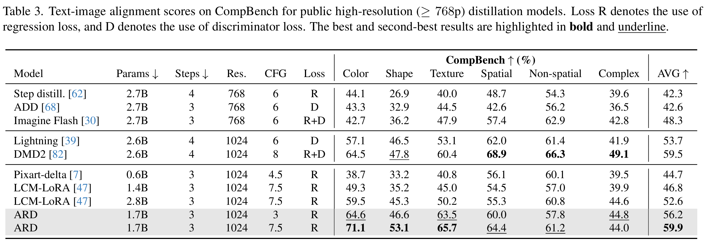 |
|---|
| 表3：公开高分辨率（≥768p）蒸馏模型在CompBench上的文本-图像对齐分数。损失R表示使用回归损失，D表示使用判别器损失。最佳和次佳结果分别用粗体和下划线突出显示。 |
| 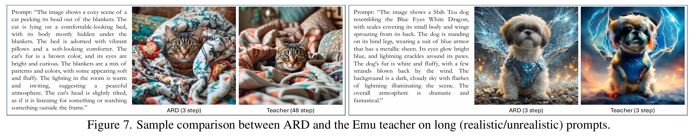 |
|---|
| 图7. ARD与Emu教师在长（真实/非真实）提示上的样本比较。 |
样本质量 表4显示了针对1024p公开蒸馏方法的FID比较，这些方法以教师的PF-ODE为目标。虽然学生的绝对性能（FID-S）在模型中排名第二，但最佳模型LCM-LoRA（2.8B）比ARD多11亿参数。由于当蒸馏以PF-ODE为目标时，蒸馏模型的上限性能是教师，因此其性能高度依赖于教师的性能（FID-T）。表4显示了一个明显的趋势：参数更大的教师模型在FID-T上表现更好。为了量化蒸馏方法的有效性，我们测量性能下降，即教师和学生之间的差距。与基线相比，ARD表现出最小的下降。我们从同一个Emu教师训练了步长蒸馏，ARD仍然表现更好，这进一步验证了使用轨迹历史的好处。
| 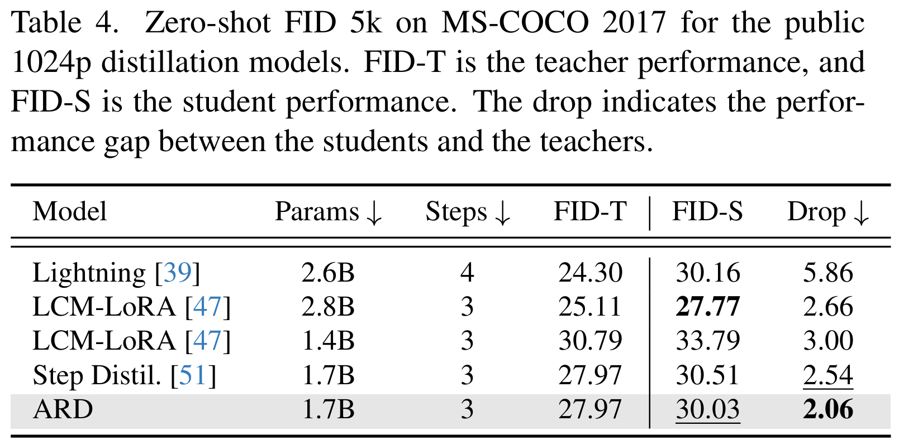 |
|---|
| 表4：公开1024p蒸馏模型在MS-COCO 2017上的零样本FID 5k。FID-T是教师性能，FID-S是学生性能。下降值表示学生和教师之间的性能差距。 |
图1显示了从Emu（7.5 CFG）蒸馏的ARD生成的样本。ARD生成跨各种主题和风格的高质量图像。图7左侧的示例比较了ARD和目标教师在相同初始噪声$x_{\tau_S}$和具有现实上下文（左）及非现实上下文（右）的长详细提示下的样本。样本并不相同，但ARD生成的图像保持了高保真度并有效保留了文本信息。图像中很好地捕捉了主体和背景的详细描述。图7右侧的示例比较了教师和学生在3步中生成的样本。尽管步数相同，但ARD仅使用额外的kv缓存，而教师由于CFG需要两倍的计算量。
| 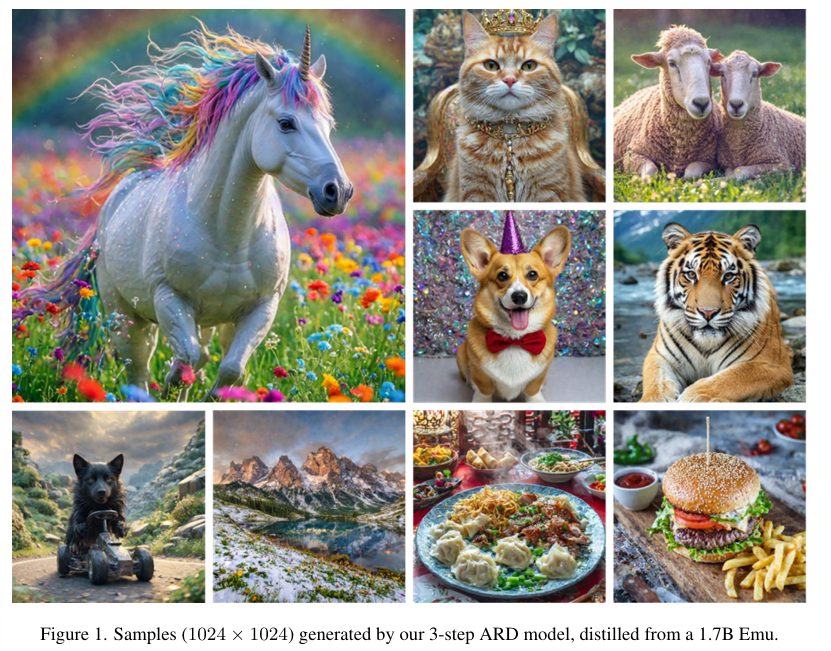 |
|---|
| 图1. 我们的3步ARD模型生成的样本（1024×1024），该模型由17亿参数的Emu模型蒸馏而来。 |
5. 总结
本文介绍了一种新颖的扩散Transformer少步蒸馏方法，该方法通过自回归方式利用整个历史ODE轨迹，对分步蒸馏进行了泛化。我们还引入了一种改进的Transformer架构，以支持自回归蒸馏设计。ODE轨迹的使用通过在每一步都保持真实输入信号，减轻了暴露偏差。通过将历史轨迹分析为更优质的粗粒度信息来源，基于注意力权重分析，ARD引入了仅在较低层使用历史轨迹这一额外设计选择。实证结果表明，ARD优于分步蒸馏，并且超越了现有的少步生成模型。
A. 相关工作
A.1. 扩散加速模型
基于ODE的加速：一系列研究提出了通过开发数值求解器来高效获取给定PF-ODE的解的方法，以在少步范围内减少离散化误差。另一类研究通过修正ODE轨迹的曲率来学习连续流ODE模型，从而减少求解ODE所需的步数。还有一种方法是利用给定ODE轨迹的确定性，将ODE的解蒸馏到少步学生模型中，这与我们的工作最为契合。一些论文建议通过利用学生预测与教师预测之间的回归损失来学习初始噪声和样本的耦合。而另一些论文则建议利用基于学生自一致性的回归损失。
分布匹配蒸馏：这类研究侧重于少步学生分布与教师分布之间的匹配，而不依赖于ODE轨迹。一些方法在训练过程中估计学生模型的得分函数，并确保其与教师的得分函数相似。其他方法利用判别器和对抗损失，但这通常需要大量的超参数搜索来实现稳定训练。值得注意的是，为了获得实际的性能提升，分布匹配损失通常也会与基于ODE的蒸馏方法中的回归损失相结合。这些方法需要训练辅助神经网络（例如学生得分网络、判别器）进行蒸馏，这需要额外的计算资源和内存。
A.2. 基于Transformer的视觉生成模型
自回归模型：视觉自回归模型最初是在像素空间中应用CNN或RNN架构。随后，一系列研究提出了在带有自编码模块的向量量化嵌入空间中进行自回归建模。这些模型将图像视为一维离散值令牌序列，并采用与语言模型类似的Transformer架构。进一步的研究通过联合估计语言和视觉令牌（一次一个令牌），将自回归模型扩展到多模态生成。最近，有研究提出预测二维令牌图序列，而不是一维令牌序列。这一变化显著缩短了预测序列的长度，从而减少了推理过程中对模型的调用次数。我们的工作也基于二维令牌图展开。然而，与该研究不同的是，该研究需要一个专门的自编码器，而我们的二维令牌图序列直接来自任何预训练的扩散Transformer。
DART：DART是一项并行工作，它提出了一种基于扩散过程的二维令牌图序列的自回归模型。然而，它与我们的工作存在根本差异。我们提出的蒸馏方法（ARD）允许沿着预训练扩散模型的反向ODE轨迹将推理步数减少到3或4步，相比之下，DART是一种普通的扩散模型，效率非常低，需要大量的采样步骤。这导致表5中的性能存在显著差距，因为我们的模型是专门为在少步范围内工作而设计的。在二维令牌图序列的形成方式上也存在差异。在ARD中，我们直接使用教师的反向ODE轨迹。而在DART中，轨迹是通过对真实数据应用正向加噪过程形成的。
| 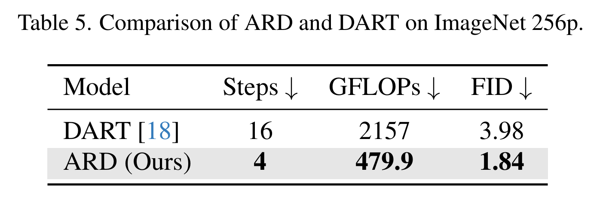 |
|---|
| 表5：ARD与DART在ImageNet 256p上的比较。 |
B. 实验细节
B.1. 类别条件图像生成
我们在学生模型训练中遵循教师模型的配置，仅调整了梯度裁剪和批量大小。表6展示了使用回归损失的4步学生模型的训练配置。对于2步学生模型，我们使用128的批量大小；对于1步学生模型，使用256的批量大小。学生模型从教师模型的权重初始化。默认情况下，我们将第s步的预测目标设置为$\mathbb{E}[x_0 | x_{\tau_s}]$。我们使用8块NVIDIA A100 GPU进行训练，训练过程大约需要2天。如图8a中的蓝线所示，FID在16小时（10万次迭代）内几乎收敛。我们对基线模型（分步蒸馏）也采用了相同的设置。需要注意的是，分步蒸馏并非使用原始论文中提出的渐进式算法进行训练，而是直接从教师模型学习。目标函数的相关内容请参见2.2节。
| 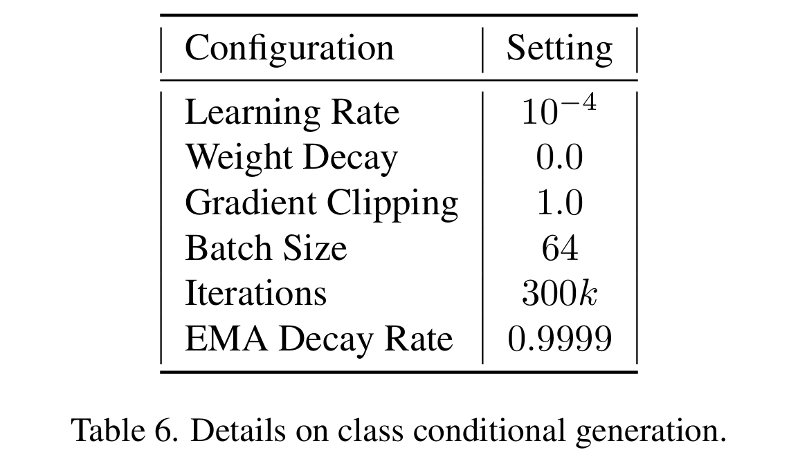 |
|---|
| 表6：类别条件生成的详细信息。 |
| 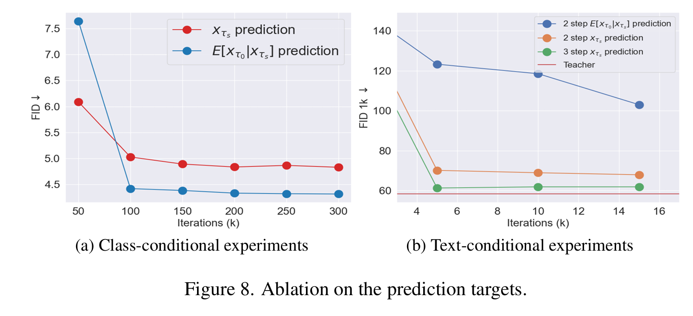 |
|---|
| 图8. 预测目标的消融实验。 |
当使用额外的判别器损失时，我们类似于相关研究，将教师网络用作特征提取器，并仅训练每个Transformer块提取的特征之上的判别器头。判别器头以令牌为单位预测对数概率。我们使用铰链损失，并遵循相关研究中提出的判别器头架构。判别器在学生模型的最终预测$\hat{x}_{\tau_0}=G_{\theta}(x_{\tau_S: \tau_1}, 1)$和真实数据上进行训练。我们使用$1e^{-3}$的学习率对其进行训练，且不使用权重衰减。我们按照相关研究，在回归损失和判别器损失之间进行自适应平衡。学生模型和判别器均使用48的批量大小。通过添加判别器损失，并对经过回归损失预训练的学生模型进行进一步微调，我们在仅4万次迭代内就将FID从4.32提升至1.84。
B.2. 文本条件图像生成
Emu教师模型有17亿个参数，由24个DiT层组成，并使用交叉注意力层进行文本条件控制。Emu是一个潜在扩散模型，它将1024×1024×3的图像编码到128×128×8的潜在空间中。蒸馏设置与类别条件情况下的流程相似。我们遵循与教师模型相同的训练配置，只是调整了批量大小。学生模型使用块级因果掩码（M4），且$N=1$，因为这一设置在性能和质量的权衡上表现最佳。为了快速训练，预测目标设置为$x_{\tau_s}$。我们使用32块H100 GPU训练学生模型。表7展示了用于生成图1中图像的提示词（从左到右，从上到下）。
C. 额外的实验结果
C.1. 在ImageNet 256p上的更多消融实验
预测目标：教师模型提供ODE路径$x_{\tau_s} \in [x_{\tau_S},…,x_{\tau_0}]$。当我们求解教师ODE时，教师还会在每个步骤$s$提供等效目标$\mathbb{E}[x_{\tau_0}|x_{\tau_s}]$，这被称为“预测的$x_{\tau_0}$”。图8a展示了类别条件实验中两个预测目标的消融结果。$x_{T_s}$预测在最初的5万次迭代中收敛更快，但使用目标$\mathbb{E}[x_{\tau_0}|x_{\tau_s}]$时，模型最终会收敛到更好的局部最优解。我们推测，$\mathbb{E}[x_{\tau_0}|x_{\tau_s}]$作为输入在提供细粒度信息方面具有优势，因为不必要的噪声已被去除。正如8b所示，在文本条件实验中，两种估计目标之间的学习速度差异更为明显。在我们的早期工作中，我们观察到在2步实验中，$x_{T_2}$预测收敛迅速且性能令人满意，因此我们在其余实验中选择了$x_{T_2}$预测。
历史轨迹使用层数（$N$）的消融：我们通过对$N$的不同取值进行消融实验，提供了更多的评估结果。每个指标都显示出与图6c中的FID相似的趋势。图9d展示了不同$N$值的训练曲线。我们发现$N=6$是最优值。在10万次迭代后，性能优势仍然保持，且$N=6$不仅具有更好的收敛点，学习速度也更快。
| 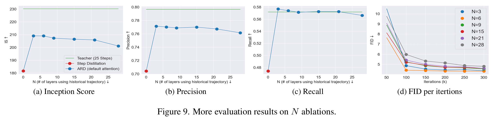 |
|---|
| 图9. 关于N消融的更多评估结果。 |
C.2. 图像操作
ARD提供了类似于相关研究的图像操作能力。从初始噪声$x_{\tau_S}$开始采样，ARD通过在特定时间步$s$使用源图像$x^{src}$作为输入（而非预测$\hat{x}_{\tau_s}$），将其去噪到目标类别（即$\hat{x}_{\tau_{s-1}}=G_{\theta}([\hat{x}_{\tau_S:\tau_{s+1}},x^{src}],s)$）。后续的采样过程与之前相同。图10展示了使用4步ARD的图像转换结果。第一步的预测被替换为源图像，并输入到ARD模型中。
| 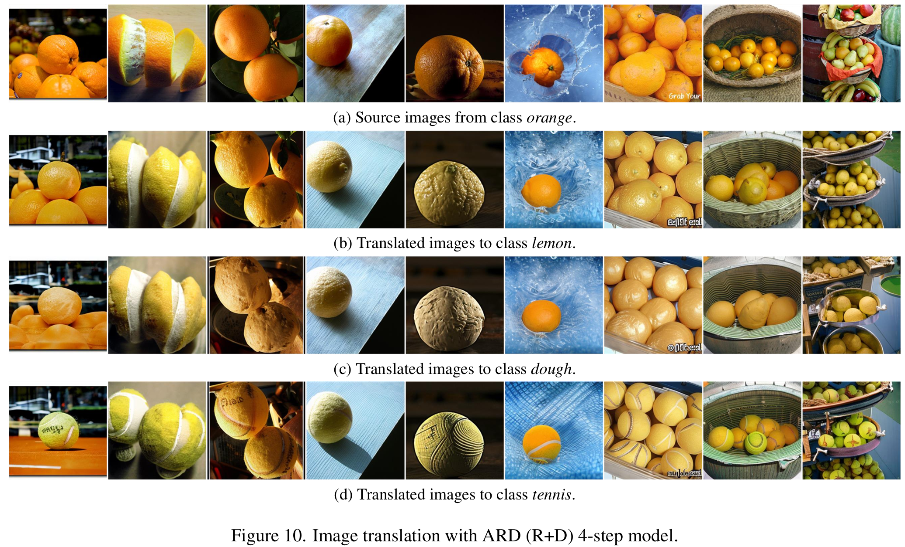 |
|---|
| 图10. 使用ARD（R+D）4步模型进行的图像转换。 |
C.3. 文本到图像（T2I）的图像-文本对齐的参考教师性能
表8展示了表3中列出的3步蒸馏模型对应的教师模型性能。从Emu（3.0 CFG）蒸馏得到的ARD在平均得分上的差距为$2.3(=58.5-56.2)$，这在所有竞争者中是最小的。从Pixart-alpha蒸馏得到的Pixart-delta的差距为4.2，从SSD和LDM-XL蒸馏得到的LCM-LoRA的差距分别为8.0和3.3。所有768分辨率的学生模型均从Emu（27亿参数）蒸馏得到，表现最佳的模型Imagine Flash的差距为4.9。
| 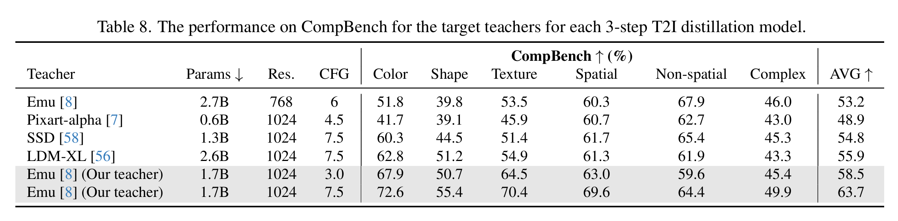 |
|---|
| 表8：每个3步T2I蒸馏模型的目标教师在CompBench上的性能。 |
总结
本文提出的方法是将过去的梯度信息和初始噪声的信息全部引入Transformer模型，从而减少当前时刻学生模型的误差累积，提高生成图像的保真度，并加速模型的生成。
可以借鉴的部分：
- 将过去的梯度信息和初始噪声都融合进来，这样就得到了过去的轨迹变化。